Gold & Global Economic Newsព័ត៌មានមាស និងសេដ្ឋកិច្ចពិភពលោក
Daily news that moves gold (XAU/USD), explained simply in English and Khmer.
ព័ត៌មានប្រចាំថ្ងៃដែលជះឥទ្ធិពលដល់តម្លៃមាស (XAU/USD) ពន្យល់ងាយៗជាភាសាអង់គ្លេស និងខ្មែរ។
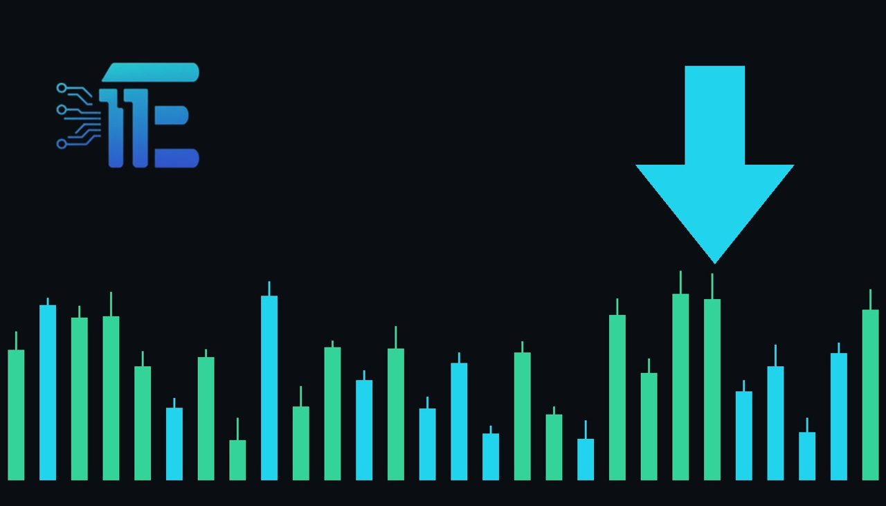
Gold Slides Toward $4,110 on Fed Tightening and Geopolitical Uncertaintyមាសធ្លាក់ចុះក្បែរ ៤,១១០ ដុល្លារ ដោយសារការរឹតបន្តឹង Fed និងភាពមិនច្បាស់លាស់ភូមិសាស្ត្រនយោបាយ
Gold fell toward $4,110 as mixed geopolitical signals clouded inflation and central bank outlooks. Persistent expectations of monetary tightening continue to damp investor demand for bullion.
តម្លៃមាសបានធ្លាក់ចុះឆ្ពោះទៅក្បែរ ៤,១១០ ដុល្លារ ខណៈសញ្ញាមិនច្បាស់លាស់ពីភូមិសាស្ត្រនយោបាយធ្វើឱ្យទស្សនវិស័យអតិផរណាស្រពេចស្រពិល។ ការរំពឹងទុកលើការរឹតបន្តឹងអត្រាការប្រាក់បន្ថែមទៀតនៅតែបន្តដាក់សម្ពាធលើលោហៈធាតុមានតម្លៃនេះ។
JPMorgan Sees Bitcoin Topping Stocks, Bonds, and GoldJPMorgan បង្ហាញថា Bitcoin អាចវ៉ាដាច់ភាគហ៊ុន មិត្តប័ណ្ណ និងមាស
JPMorgan has included Bitcoin in its long-term capital market assumptions for the first time. This projection highlights changing institutional views on alternative assets competing with gold.
JPMorgan បានដាក់បញ្ចូល Bitcoin ទៅក្នុងការព្យាករណ៍ទីផ្សាររយៈពេលវែងរបស់ខ្លួនជាលើកដំបូង។ ការណ៍នេះបង្ហាញពីការផ្លាស់ប្តូរទស្សនៈរបស់ស្ថាប័នលើទ្រព្យសកម្មជំនួសដែលប្រកួតប្រជែងជាមួយមាស។
Weak US Housing Data Clashes With Fed Rate Hike Considerationsទិន្នន័យគេហដ្ឋានអាមេរិកចុះខ្សោយស្របពេល Fed ពិចារណាដំឡើងអត្រាការប្រាក់
Fresh US housing reports showed renewed deterioration in September as policymakers evaluate interest rate moves. The data could influence gold by shifting expectations around Federal Reserve tightening and economic momentum.
របាយការណ៍សេដ្ឋកិច្ចថ្មីបង្ហាញថាទិន្នន័យគេហដ្ឋានអាមេរិកបានបន្តធ្លាក់ចុះនៅក្នុងខែកញ្ញា។ កត្តានេះជះឥទ្ធិពលលើមាស ដោយសារវាអាចកែប្រែការរំពឹងទុកលើការដំឡើងអត្រាការប្រាក់របស់ Fed និងកំណើនសេដ្ឋកិច្ច។
JPMorgan Projects Bitcoin to Outperform Gold and EquitiesJPMorgan ព្យាករថា Bitcoin នឹងផ្តល់ផល منافع លើស មាស និងភាគហ៊ុន
JPMorgan Asset Management បានព្យាករពីកំណើនប្រចាំឆ្នាំ 10% សម្រាប់ Bitcoin ដែលលើសពីភាគហ៊ុន និង មាស។ ការព្យាករនេះមានសារៈសំខាន់សម្រាប់ មាស ដោយសារស្ថាប័នគ្រប់គ្រងទ្រព្យសម្បត្តិកំពុងថ្លឹងថ្លែងជម្រើសឌីជីថលធៀបនឹងទ្រព្យសម្បត្តិសុវត្ថិភាពរូបវន្ត។
JPMorgan Asset Management បានព្យាករពីកំណើនប្រចាំឆ្នាំ 10% សម្រាប់ Bitcoin ដែលលើសពីភាគហ៊ុន និង មាស។ ការព្យាករនេះមានសារៈសំខាន់សម្រាប់ មាស ដោយសារស្ថាប័នគ្រប់គ្រងទ្រព្យសម្បត្តិកំពុងថ្លឹងថ្លែងជម្រើសឌីជីថលធៀបនឹងទ្រព្យសម្បត្តិសុវត្ថិភាពរូបវន្ត។
Investors Direct $500 Million into Low-Cost Gold Fundវិនិយោគិនចាក់បញ្ចូល $500 លានដុល្លារទៅក្នុងមូលនិធិមាសតម្លៃទាប
Investors allocated half a billion dollars into an alternative SPDR gold fund over the flagship vehicle. Sustained bullion fund inflows demonstrate persistent underlying demand that supports XAU/USD.
វិនិយោគិនបានបង្វែរប្រាក់កន្លះពាន់លានដុល្លារទៅកាន់មូលនិធិមាស SPDR ជំនួសដែលមានថ្លៃសេវាទាបជាង។ លំហូរទុនវិនិយោគចូលក្នុងមូលនិធិមាសបែបនេះបង្ហាញពីតម្រូវការជាក់ស្តែងដែលអាចជួយគាំទ្រដល់ XAU/USD។
Gold Drops for Third Day on Oil-Driven Inflation Fearsមាសធ្លាក់ចុះជាថ្ងៃទីបី ដោយសារក្តីបារម្ភអតិផរណាពីតម្លៃប្រេង
Gold prices fell on Tuesday, extending declines into a third session as elevated energy costs reignited inflation worries. The shifting Federal Reserve interest rate outlook directly pressures the non-yielding metal ahead of next week's policy meeting.
តម្លៃមាសបានធ្លាក់ចុះនៅថ្ងៃអង្គារ ដោយបន្តការខាតបង់ជាថ្ងៃទីបីជាប់ៗគ្នា ខណៈតម្លៃប្រេងឡើងថ្លៃបានបង្កើនការព្រួយបារម្ភអំពីអតិផរណា។ ទស្សនវិស័យគោលនយោបាយរបស់ Fed ដែលកំពុងផ្លាស់ប្តូរនេះ ប៉ះពាល់ដោយផ្ទាល់ដល់លោហៈធាតុដែលគ្មានការប្រាក់នេះ មុនការប្រជុំធនាគារកណ្តាលសប្តាហ៍ក្រោយ។
Digital Gold Could Unlock $700B Latent Demand, Study Showsការសិក្សាបង្ហាញថាមាសបែបឌីជីថលអាចទាក់ទាញតម្រូវការរហូតដល់ 700 ពាន់លានដុល្លារ
A joint report reveals digital gold could unlock up to $700 billion in latent demand globally. Expanding investor access through tokenized channels could bolster long-term structural demand for gold.
របាយការណ៍រួមគ្នាមួយបង្ហាញថាមាសបែបឌីជីថលអាចទាក់ទាញតម្រូវការវិនិយោគរហូតដល់ 700 ពាន់លានដុល្លារអាមេរិក។ ការពង្រីកលទ្ធភាពវិនិយោគនេះអាចជួយគាំទ្រដល់តម្រូវការមាសរូបវន្តរយៈពេលវែងយ៉ាងខ្លាំង។
Gold Slips as Dollar Gains and Yields Edge Upមាសធ្លាក់ចុះបន្តិចដោយសារដុល្លារអាមេរិកនិងអត្រាការប្រាក់កើនឡើង
Gold futures settled lower as the U.S. dollar firmed, yields rose, and oil prices pared early losses. This market movement highlights how strengthening currency values and rising yields put direct downward pressure on gold prices.
តម្លៃមាសបានបិទបញ្ជីធ្លាក់ចុះដោយសារប្រាក់ដុល្លារអាមេរិកងើបឡើងវិញនិងអត្រាការប្រាក់កើនឡើង។ ការប្រែប្រួលនេះបង្ហាញពីរបៀបដែលកម្លាំងដុល្លារនិងអត្រាការប្រាក់មានឥទ្ធិពលផ្ទាល់លើតម្លៃមាស។
China Growth Quickens on AI Exports Amid Trade Headwindsកំណើនសេដ្ឋកិច្ចចិនកើនឡើងដោយសារការនាំចេញ AI ចំពេលមានភាពតានតឹងពាណិជ្ជកម្ម
China's economic growth accelerated as an AI export surge offset sluggish domestic spending. For gold, Chinese trade momentum and trade tensions influence physical demand and broader risk sentiment.
កំណើនសេដ្ឋកិច្ចរបស់ប្រទេសចិនបានកើនឡើង ខណៈដែលការកើនឡើងនៃការនាំចេញបច្ចេកវិទ្យា AI បានជួយទូទាត់ការចំណាយក្នុងស្រុកដែលនៅខ្សោយ។ សម្រាប់ទីផ្សារ មាស សន្ទុះពាណិជ្ជកម្មរបស់ចិន និងភាពតានតឹងពាណិជ្ជកម្មអាចជះឥទ្ធិពលដល់តម្រូវការជាក់ស្តែង និងអារម្មណ៍ហានិភ័យទូទៅ។
US Record $1 Trillion Interest Bill Fuels Gold Safe-Haven Appealបន្ទុកការប្រាក់បំបែកកំណត់ត្រា ១ ពាន់ពាន់លានដុល្លាររបស់សហរដ្ឋអាមេរិកជួយជំរុញទីផ្សារមាស
Annual US interest costs have surged to an unprecedented $1 trillion as debt pressures mount. Growing unease over currency debasement and persistent inflation strengthens interest in gold as a tangible store of value.
ការចំណាយលើការប្រាក់ប្រចាំឆ្នាំរបស់សហរដ្ឋអាមេរិកបានកើនឡើងដល់កម្រិតខ្ពស់បំផុតមិនធ្លាប់មានគឺ ១ ពាន់ពាន់លានដុល្លារ ខណៈសម្ពាធបំណុលកើនឡើង។ ក្តីបារម្ភអំពីការធ្លាក់ចុះតម្លៃរូបិយប័ណ្ណ និងអតិផរណាដែលនៅតែបន្ត កំពុងបង្កើនការចាប់អារម្មណ៍លើមាសជាទ្រព្យសម្បត្តិស្តុកតម្លៃដ៏រឹងមាំ។
Central Banks Reshuffle Reserves Amid Heightened Global Uncertaintyធនាគារកណ្តាលរៀបចំទុនបម្រុងឡើងវិញ ចំពេលមានភាពមិនប្រាកដប្រជាសកល
Central banks are actively re-evaluating foreign reserve storage across custody risk, physical access, and market liquidity. This structural reshuffling highlights long-term institutional demand underpinning gold.
ធនាគារកណ្តាលនានាកំពុងវាយតម្លៃឡើងវិញនូវការរក្សាទុកទុនបម្រុងបរទេសដោយផ្អែកលើហានិភ័យនៃការរក្សាទុក ភាពងាយស្រួលក្នុងការទទួលបាន និងសាច់ប្រាក់ងាយស្រួល។ ការផ្លាស់ប្តូររចនាសម្ព័ន្ធនេះបង្ហាញពីតម្រូវការស្ថាប័នដែលគាំទ្រដល់មាស។
Gold Rises as Warsh Remarks Ease Fed Hike Betsមាសឡើងថ្លៃ ខណៈសម្ដីរបស់ Warsh ធ្វើឱ្យការរំពឹងទុកលើការដំឡើងអត្រាការប្រាក់របស់ Fed ថយចុះ
Spot gold climbed to $4,173.59 an ounce and futures rose to $4,194.05 following remarks by Warsh. The comments curbed expectations for aggressive Federal Reserve rate hikes, supporting precious metals.
តម្លៃមាសស្ដុតបានឡើងដល់ 4,173.59 ដុល្លារក្នុងមួយអោន បន្ទាប់ពីមានការបញ្ចេញមតិពីសំណាក់ Warsh ។ ការណ៍នេះបានកាត់បន្ថយការរំពឹងទុកលើការដំឡើងអត្រាការប្រាក់យ៉ាងខ្លាំងក្លាពី Fed ដែលជួយទ្រទ្រង់ទីផ្សារលោហៈមានតម្លៃ។
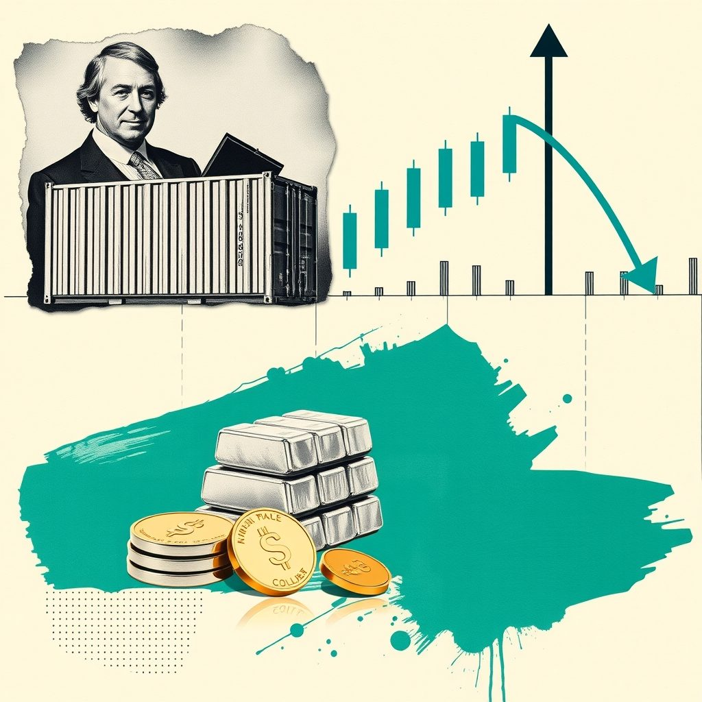
Gold Slides Toward $4,145 Following Hot US Inflation Dataតម្លៃមាសធ្លាក់ចុះមកក្បែរ $4,145 ក្រោយទិន្នន័យអតិផរណាសហរដ្ឋអាមេរិកឡើងកម្តៅ
Spot gold weakened after higher-than-expected CPI, PPI, and import price figures signaled ongoing inflation. The stubborn price data shapes expectations for Federal Reserve interest rate policy, impacting bullion demand.
តម្លៃមាសបានធ្លាក់ចុះបន្ទាប់ពីទិន្នន័យ CPI, PPI និងថ្លៃទំនិញនាំចូលបង្ហាញពីសម្ពាធអតិផរណាដ៏រ៉ាំរ៉ៃ។ ការកើនឡើងនៃថ្លៃទំនិញនេះជះឥទ្ធិពលលើការរំពឹងទុកចំពោះគោលនយោបាយរបស់ Fed ដែលប៉ះពាល់ផ្ទាល់ដល់តម្រូវការមាស។
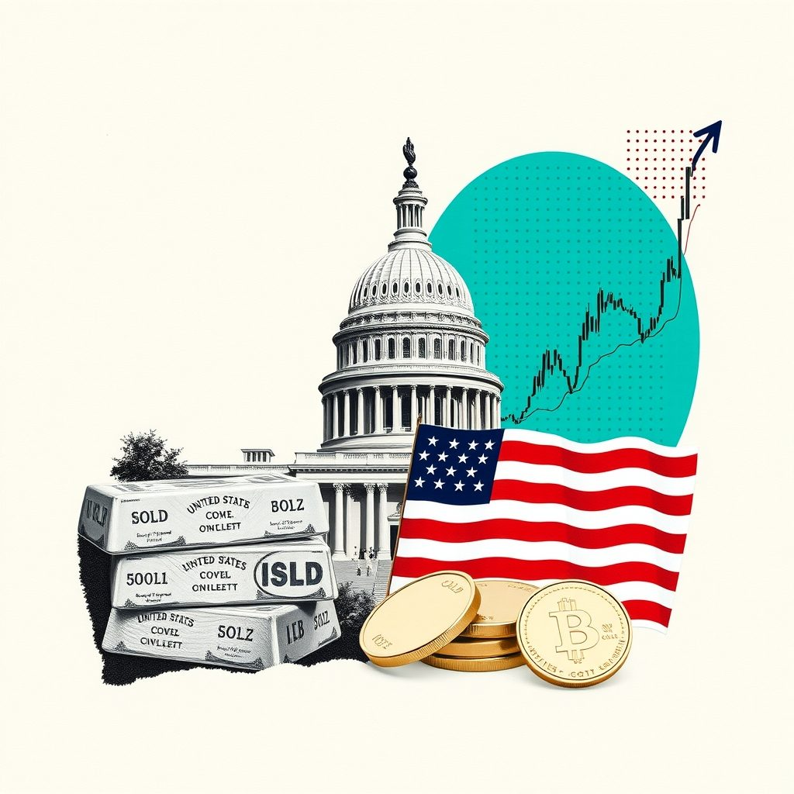
Treasury Yields Above 5% and $2T Deficit Confront Marketsទិន្នផល Treasury លើស 5% និងឱនភាព $2 ទ្រីលានប្រឈមមុខនឹងទីផ្សារ
US Treasury yields holding above 5% and a $2 trillion deficit are elevating federal borrowing costs. For gold, high yields raise holding costs while massive debt fuels long-term safe-haven interest.
ទិន្នផល Treasury អាមេរិកដែលឈរលើស 5% និងឱនភាព $2 ទ្រីលាន កំពុងរុញបន្ទុកការប្រាក់រដ្ឋាភិបាលឱ្យកើនឡើង។ សម្រាប់មាស ទិន្នផលខ្ពស់បង្កើនថ្លៃដើមកាន់កាប់ ខណៈបំណុលដ៏ធំជួយគាំទ្រតម្រូវការការពារហានិភ័យរយៈពេលវែង។
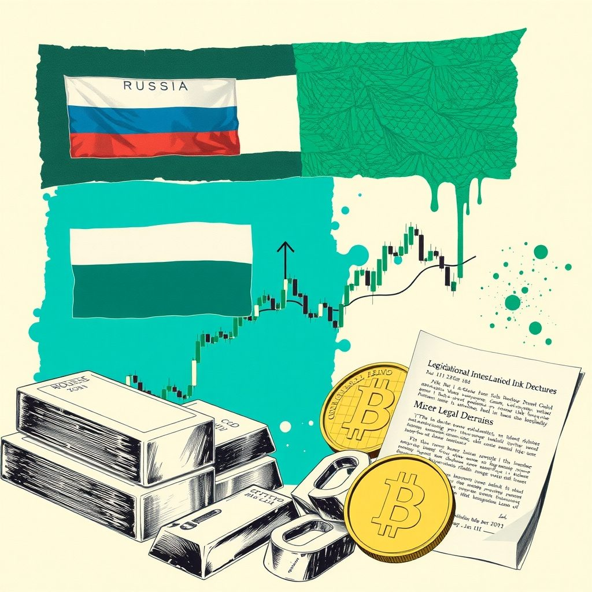
Trump Waives Russia Sanctions as New Law Takes EffectTrump លើកលែងទណ្ឌកម្មមួយចំនួនលើរុស្ស៊ីពេលច្បាប់ថ្មីចូលជាធរមាន
President Trump has waived several sanctions against Russia under a newly enacted law targeting Moscow over the war in Ukraine. Shifts in US sanctions policy directly affect geopolitical risk sentiment and safe-haven demand across the gold market.
ប្រធានាធិបតី Trump បានសម្រេចលើកលែងទណ្ឌកម្មមួយចំនួនប្រឆាំងនឹងរុស្ស៊ីក្រោមច្បាប់ថ្មីរបស់សហរដ្ឋអាមេរិកដែលដាក់ទោសទីក្រុងម៉ូស្គូជុំវិញសង្គ្រាមនៅអ៊ុយក្រែន។ ការប្រែប្រួលនៃគោលនយោបាយទណ្ឌកម្មនេះជះឥទ្ធិពលផ្ទាល់ដល់ហានិភ័យភូមិសាស្ត្រនយោបាយ និងតម្រូវការទិញមាសទុកជាទ្រព្យសុវត្ថិភាព។
Fed Chair Kevin Warsh Keeps Markets Guessing on Ratesប្រធាន Fed លោក Kevin Warsh
Federal Reserve Chair Kevin Warsh left market expectations unshaped ahead of the upcoming central bank meeting. This strategic silence keeps traders guessing on future interest rate directions and their impact on XAU/USD.
ប្រធានធនាគារកណ្តាល Fed លោក Kevin Warsh មិនទាន់បញ្ចេញតម្រុយច្បាស់លាស់ជុំវិញកិច្ចប្រជុំខាងមុខទេ។ ភាពស្ងៀមស្ងាត់នេះធ្វើឱ្យអ្នកជួញដូរបន្តតាមដានផលប៉ះពាល់លើ XAU/USD។
Gold Holds Near $4,160 as Equity Selloff Drives Bond Rallyមាសរក្សាទម្រង់ជុំវិញតម្លៃ 4,160 ដុល្លារ ខណៈការលក់ចេញភាគហ៊ុនជំរុញទីផ្សារប័ណ្ណបំណុល
Gold prices held steady near $4,160 an ounce after rising to a two-week high following a stock market selloff. This equity weakness prompted investors to seek safety in bonds, driving U.S. Treasury yields lower.
តម្លៃមាសបានរក្សាលំនឹងជុំវិញ 4,160 ដុល្លារក្នុងមួយអោន បន្ទាប់ពីបានឡើងដល់កម្រិតខ្ពស់បំផុតក្នុងរយៈពេល 2 សប្តាហ៍។ ការធ្លាក់ចុះទីផ្សារភាគហ៊ុនបានជំរុញឱ្យអ្នកវិនិយោគស្វែងរកសុវត្ថិភាពនៅក្នុងប័ណ្ណបំណុល
Hot PPI Sparks Warnings of Imminent Fed Rate Hikeទិន្នន័យ PPI កើនឡើងបង្កការព្រមានពីការដំឡើងអត្រាការប្រាក់ Fed
សេដ្ឋវិទូបានព្រមានថា កម្រិតថ្លៃទំនិញផលិតករដែលកើនឡើងបង្ហាញថាការងារទប់ស្កាត់អតិផរណារបស់ Fed មិនទាន់ចប់នៅឡើយទេ។ ហានិភ័យនៃការដំឡើងអត្រាការប្រាក់ថ្មីនេះបង្កើតជាសម្ពាធអវិជ្ជមានសម្រាប់មាស។
សេដ្ឋវិទូបានព្រមានថា កម្រិតថ្លៃទំនិញផលិតករដែលកើនឡើងបង្ហាញថាការងារទប់ស្កាត់អតិផរណារបស់ Fed មិនទាន់ចប់នៅឡើយទេ។ ហានិភ័យនៃការដំឡើងអត្រាការប្រាក់ថ្មីនេះបង្កើតជាសម្ពាធអវិជ្ជមានសម្រាប់មាស។
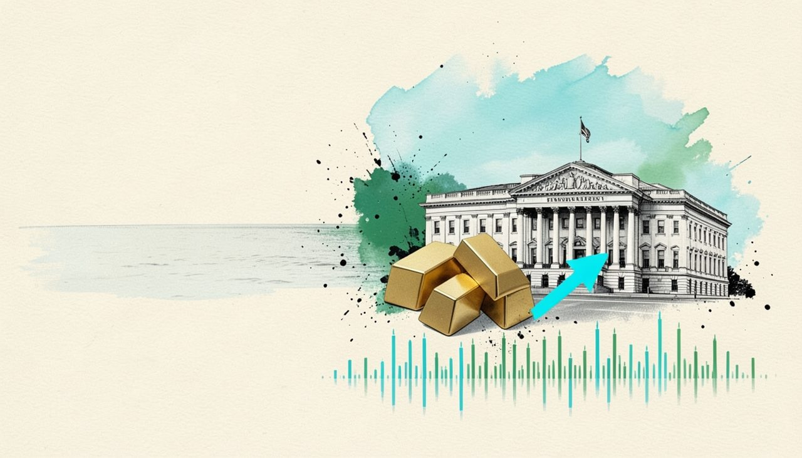
Gold Slides After Hot CPI Report Rattles Marketsមាសធ្លាក់ចុះបន្ទាប់ពីទិន្នន័យ CPI ក្តៅធ្វើឱ្យទីផ្សាររង្គោះរង្គើ
Gold dropped sharply following a surprise inflation report that rattled broader financial markets. The unexpected price data triggered intense downward pressure on the metal as investors reacted to Federal Reserve policy expectations.
តម្លៃមាសបានធ្លាក់ចុះយ៉ាងខ្លាំងបន្ទាប់ពីរបាយការណ៍អតិផរណាដ៏គួរឱ្យភ្ញាក់ផ្អើលមួយបានធ្វើឱ្យទីផ្សារហិរញ្ញវត្ថុមានភាពរង្គោះរង្គើ។ ទិន្នន័យតម្លៃដែលមិនបានរំពឹងទុកនេះបានបង្កសម្ពាធធ្លាក់ចុះយ៉ាងខ្លាំងលើលោហៈមានតម្លៃ ខណៈអ្នកជួញដូរមានប្រតិកម្មទៅនឹងការរំពឹងទុកលើគោលនយោបាយរបស់ Fed។
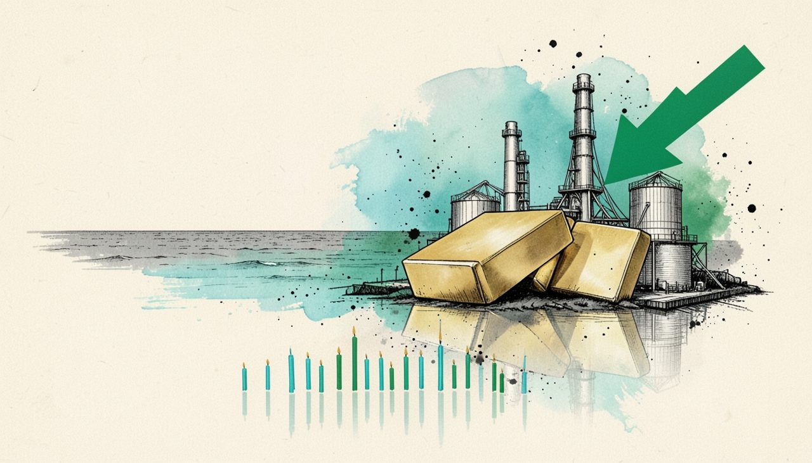
Russia Accuses Ukraine of Refinery Strike as Energy Attacks Resumeរុស្ស៊ីចោទប្រកាន់អ៊ុយក្រែនពីការវាយប្រហារលើរោងចក្រចម្រាញ់ប្រេង ខណៈការវាយប្រហារថាមពលចាប់ផ្តើមឡើងវិញ
Ukraine ended its pause on striking energy targets after new Russian attacks, prompting Russian accusations of a refinery strike. Heightened geopolitical tension typically spurs safe-haven buying in gold.
អ៊ុយក្រែនបានបញ្ចប់ការផ្អាកវាយប្រហារលើទីតាំងថាមពល បន្ទាប់ពីមានការវាយប្រហារថ្មីៗពីរុស្ស៊ី ដែលនាំឱ្យរុស្ស៊ីចោទប្រកាន់ពីការវាយប្រហាររោងចក្រចម្រាញ់ប្រេង។ ភាពតានតឹងភូមិសាស្ត្រនយោបាយ និងហានិភ័យថាមពលជាទូទៅជំរុញតម្រូវការទិញមាសជាទ្រព្យសម្បត្តិសុវត្ថិភាព។
Central Bank Buying and Record ETF Inflows Support Goldការទិញពីធនាគារកណ្តាល និងលំហូរមូលនិធិ ETF ជួយគាំទ្រតម្រូវការមាស
Record inflows into gold ETFs and continued central bank buying are providing solid demand support. These structural flows help shield gold against persistent near-term market headwinds.
លំហូរទុនវិនិយោគកម្រិតកំណត់ត្រាចូលក្នុងមូលនិធិ ETF និងការបន្តទិញពីធនាគារកណ្តាល កំពុងជួយគាំទ្រដល់តម្រូវការមាសយ៉ាងរឹងមាំ។ កត្តាទាំងនេះដើរតួជាការការពារដ៏សំខាន់សម្រាប់ទីផ្សារមាស ទោះបីជាមានសម្ពាធតម្លៃក្នុងរយៈពេលខ្លីក៏ដោយ។
Gold Rebounds as Dollar and Treasury Yields Softenមាសងើបឡើងវិញ ខណៈដុល្លារអាមេរិកនិងទិន្នផលសញ្ញាបណ្ណធ្លាក់ចុះ
Gold prices climbed on Thursday as softer Treasury yields and a weaker US dollar boosted demand. The move shows how currency and yield pullbacks can support precious metals even amid lingering interest rate concerns.
តម្លៃមាសបានកើនឡើងនៅថ្ងៃព្រហស្បតិ៍ ដោយសារតែការធ្លាក់ចុះនៃដុល្លារអាមេរិកនិងទិន្នផលសញ្ញាបណ្ណរតនាគារ។ ការប្រែប្រួលនេះបង្ហាញពីរបៀបដែលការចុះខ្សោយនៃរូបិយប័ណ្ណនិងទិន្នផលអាចជួយគាំទ្រដល់លោហៈធាតុមានតម្លៃ ទោះបីជាមានការព្រួយបារម្ភអំពីអត្រាការប្រាក់ក៏ដោយ។
US PPI and Retail Sales Ahead: Key Watch for Goldទិន្នន័យ PPI និង Retail Sales អាមេរិក៖ ចំណុចសំខាន់សម្រាប់ទីផ្សារមាស
Key US inflation and consumer data arrive tonight alongside upcoming remarks from the Fed. Gold traders should prepare for potential shifts in the dollar, yields, and rate expectations.
ទិន្នន័យអតិផរណានិងការចំណាយរបស់អ្នកប្រើប្រាស់អាមេរិកនឹងចេញផ្សាយយប់នេះ រួមជាមួយការថ្លែងសុន្ទរកថារបស់ Fed។ អ្នកជួញដូរមាសគួរត្រៀមលក្ខណៈចំពោះការប្រែប្រួលនៃដុល្លារអាមេរិក និងអត្រាការប្រាក់។
Container Ship Sinks in Strait of Hormuz After Projectile Strikeកប៉ាល់ដឹកកុងតឺន័របានលិចនៅច្រកសមុទ្រ Strait of Hormuz ក្រោយត្រូវគ្រាប់ផ្លោង
A Singapore-flagged container ship sank in the Strait of Hormuz following a projectile attack, with all 21 crew members evacuated safely. Escalating maritime security threats can spur safe-haven inflows into gold.
កប៉ាល់ដឹកកុងតឺន័រចុះបញ្ជីនៅ Singapore បានលិចនៅច្រកសមុទ្រ Strait of Hormuz ក្រោយត្រូវគ្រាប់ផ្លោង ដោយនាវិកទាំង 21 នាក់ត្រូវបានជួយសង្គ្រោះដោយសុវត្ថិភាព។ ការកើនឡើងនូវការគំរាមកំហែងសន្តិសុខដែនសមុទ្រអាចជំរុញឱ្យមានលំហូរទិញ មាស ជាទ្រព្យសម្បត្តិសុវត្ថិភាព។
Gold Drops 1.93% Amid Equity Retreat and Rising Oilមាសធ្លាក់ចុះ 1.93% ខណៈទីផ្សារភាគហ៊ុនដាំក្បាលចុះ ហើយប្រេងឡើងថ្លៃ
Midweek trading saw gold fall 1.93% and silver drop 5.81% as major stock indices tumbled while crude climbed. For gold traders, broad asset selling and rising energy costs highlight growing pressure on non-yielding precious metals.
ការជួញដូរនៅពាក់កណ្តាលសប្តាហ៍បានឃើញតម្លៃ មាស ធ្លាក់ចុះ 1.93% និងប្រាក់ធ្លាក់ចុះ 5.81% ខណៈសន្ទស្សន៍ភាគហ៊ុនសំខាន់ៗបានដាំក្បាលចុះ ប៉ុន្តែប្រេងឆៅបានកើនឡើង។ សម្រាប់អ្នកជួញដូរ មាស ការលក់ចេញទ្រព្យសកម្មយ៉ាងទូលំទូលាយ និងការកើនឡើងថ្លៃថាមពលកំពុងបង្កើនសម្ពាធលើលោហៈធាតុមានតម្លៃ។
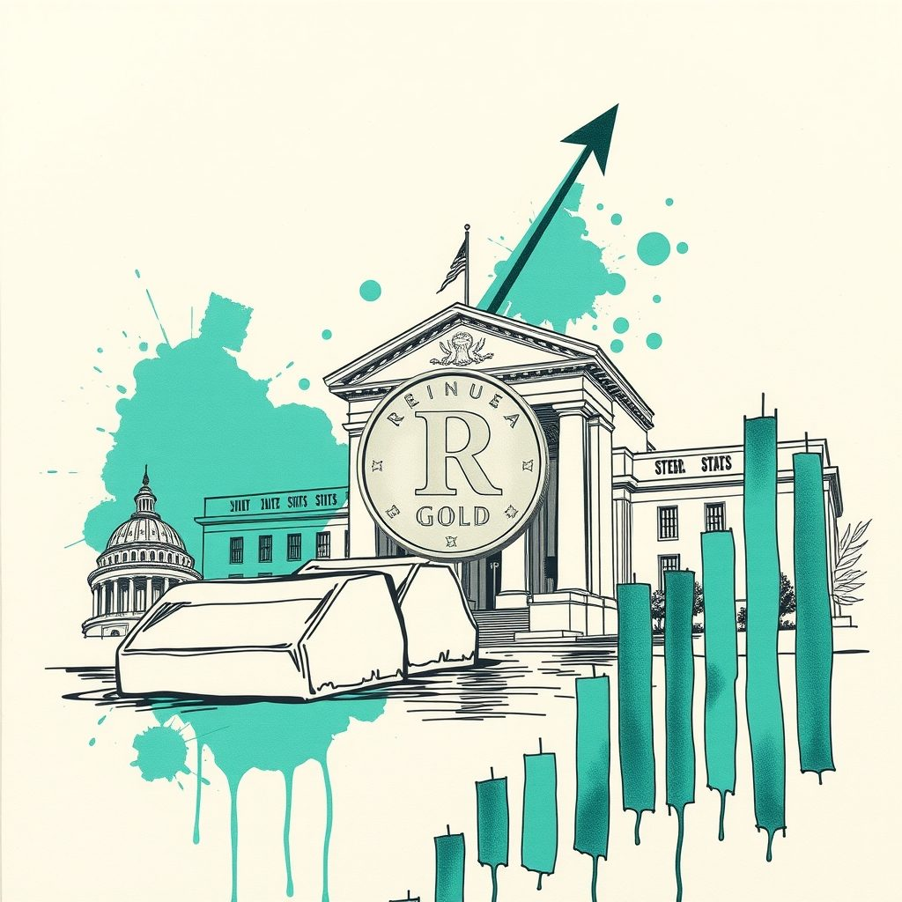
Hot Inflation Lifts Fed Rate-Hike Bets and Pressures Treasuriesអតិផរណាឡើងក្តៅជំរុញការភ្នាល់លើការដំឡើងអត្រាការប្រាក់របស់ Fed
US Treasuries slumped after hotter-than-expected inflation data prompted traders to add to wagers on Federal Reserve interest rate hikes. This shift affects gold as higher yields and rate expectations influence borrowing costs and precious metals demand.
មូលបត្របំណុលរដ្ឋាភិបាលអាមេរិកបានធ្លាក់ចុះ បន្ទាប់ពីទិន្នន័យអតិផរណាក្តៅជាងការរំពឹងទុកបានជំរុញឱ្យអ្នកជួញដូរបង្កើនការភ្នាល់លើការដំឡើងអត្រាការប្រាក់របស់ Federal Reserve។ ការផ្លាស់ប្តូរនេះប៉ះពាល់ដល់មាស ព្រោះវាគ្មិននិងផលប័ត្របំណុលជះឥទ្ធិពលដល់ាតម្លៃលោហៈមានតម្លៃ។
US Inflation Surges to 3.7%, Pressuring Precious Metalsអតិផរណាអាមេរិកឡើងដល់ 3.7% ដែលដាក់សម្ពាធលើតម្លៃមាស
US inflation rose to 3.7% in September, beating forecasts and weighing on gold prices. Higher inflation data influences rate expectations and market sentiment.
អតិផរណាអាមេរិកបានកើនឡើងដល់ 3.7% ក្នុងខែកញ្ញា ដែលលើសពីការព្យាករណ៍ និងបានទាញតម្លៃមាសឲ្យធ្លាក់ចុះ។ ទិន្នន័យអតិផរណានេះជះឥទ្ធិពលដល់ការរំពឹងទុកលើអត្រាការប្រាក់ និងអារម្មណ៍ទីផ្សារ។
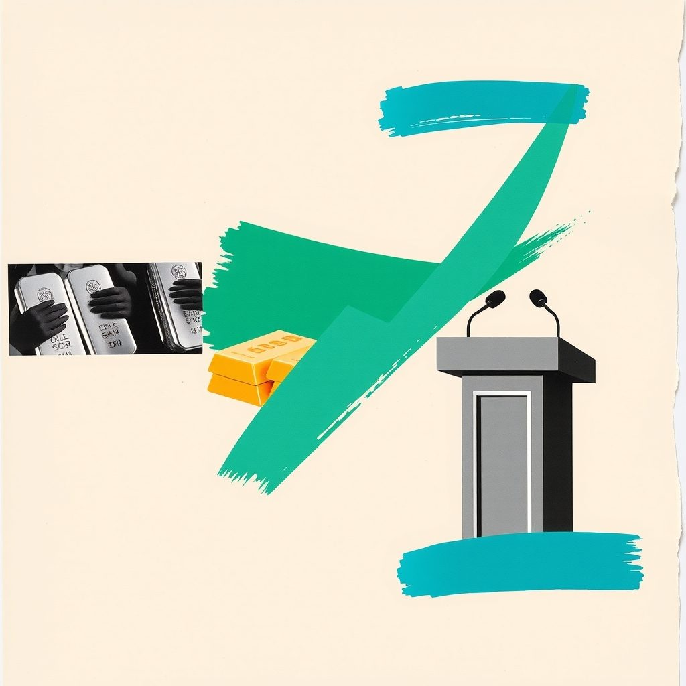
Fed’s Williams Sees 2026 Hike but No 2027 Increasesលោក Williams របស់ Fed រំពឹងដំឡើងការប្រាក់នៅឆ្នាំ 2026 តែគ្មាននៅឆ្នាំ 2027
New York Fed President John Williams expects one more rate hike in 2026 and none in 2027. Shifting interest rate expectations directly influence dollar strength and holding costs for gold.
ប្រធាន Fed សាខា New York លោក John Williams មើលឃើញការដំឡើងអត្រាការប្រាក់មួយលើកទៀតក្នុងឆ្នាំ 2026 ប៉ុន្តែគ្មានការដំឡើងបន្ថែមនៅឆ្នាំ 2027 ឡើយ។ ទស្សនវិស័យគោលនយោបាយនេះមានឥទ្ធិពលផ្ទាល់លើថ្លៃដើមនៃការកាន់កាប់ និងទិសដៅនៃតម្លៃមាស។
US CPI Ahead: Gold Faces Crucial Inflation Testទិន្នន័យ CPI អាមេរិកជិតចេញផ្សាយ៖ ការវាស់កម្តៅសំខាន់សម្រាប់មាស
Key US inflation data arrives tonight at 19:30 Phnom Penh time. Gold traders should prepare for potential swings in the dollar and yields.
ទិន្នន័យអតិផរណាអាមេរិកសំខាន់ៗនឹងចេញផ្សាយនៅម៉ោង 19:30 យប់នេះ។ អ្នកជួញដូរមាសគួរត្រៀមលក្ខណៈសម្រាប់ការប្រែប្រួលនៃដុល្លារអាមេរិក និង yield។
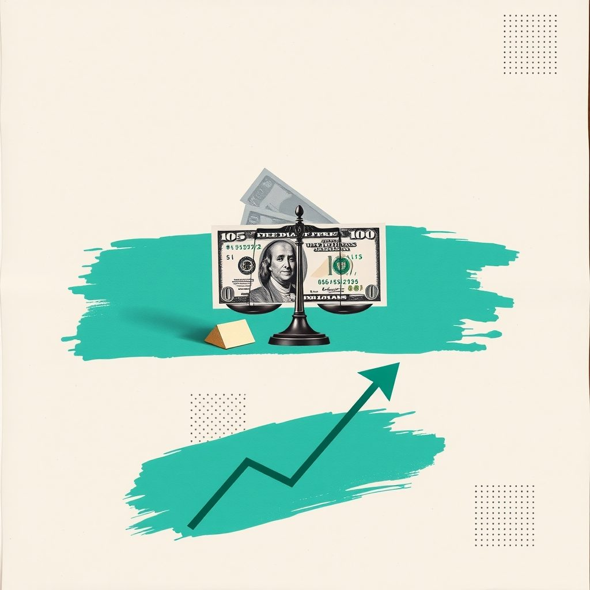
Gold Pauses Slide Near $4,155 on Fed Policy Signalsមាសទប់លំនឹងក្បែរ 4,155 ដុល្លារ ក្រោយសញ្ញាគោលនយោបាយ Fed
Gold paused a two-day decline to trade near $4,155 an ounce after New York Fed President John Williams outlined the central bank's rate trajectory. Clearer expectations around policy tightening influence yields and the US dollar, directly steering sentiment in XAU/USD.
តម្លៃមាសបានផ្អាកការធ្លាក់ចុះរយៈពេល 2 ថ្ងៃ ដោយឈរនៅក្បែរ 4,155 ដុល្លារក្នុងមួយអោន បន្ទាប់ពីប្រធាន Fed ប្រចាំ New York លោក John Williams បានលើកឡើងពីទិសដៅអត្រាការប្រាក់។ ការរំពឹងទុកលើការដំឡើងអត្រាការប្រាក់ជះឥទ្ធិពលលើប្រាក់ដុល្លារអាមេរិក និងកំណត់ទិសដៅសម្រាប់ XAU/USD។
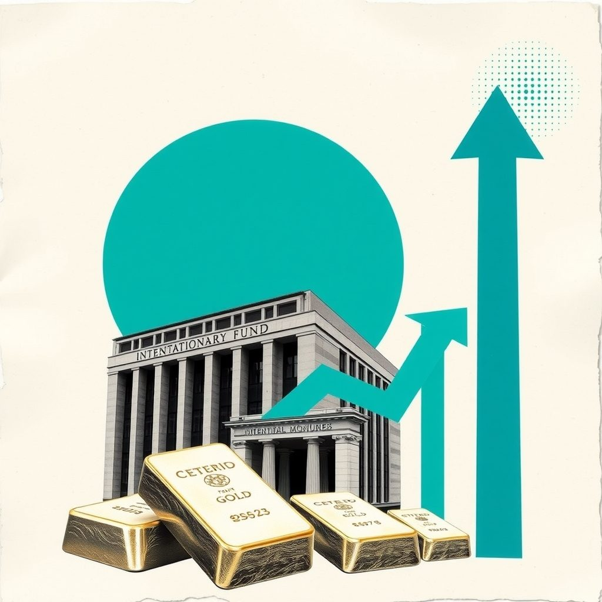
IMF Warns Bond Yields Could Spike as Risks WorsenIMF ព្រមានពីការកើនឡើងគំហុកនៃទិន្នផលសញ្ញាបណ្ណ ខណៈហានិភ័យកើនឡើង
The IMF warned that government bond yields could jump sharply and disorderly as debt and inflation risks worsen. Sharp swings in bond yields directly influence the opportunity cost of holding non-yielding gold.
IMF បានព្រមានថា ទិន្នផលសញ្ញាបណ្ណរដ្ឋាភិបាលអាចនឹងកើនឡើងយ៉ាងគំហុក និងគ្មានសណ្ដាប់ធ្នាប់ ខណៈហានិភ័យបំណុល និងអតិផរណាកាន់តែធ្ងន់ធ្ងរឡើង។ ការប្រែប្រួលយ៉ាងខ្លាំងនៃទិន្នផលសញ្ញាបណ្ណជះឥទ្ធិពលផ្ទាល់ដល់ថ្លៃដើមឱកាសនៃការកាន់កាប់មាសដែលគ្មានការប្រាក់។
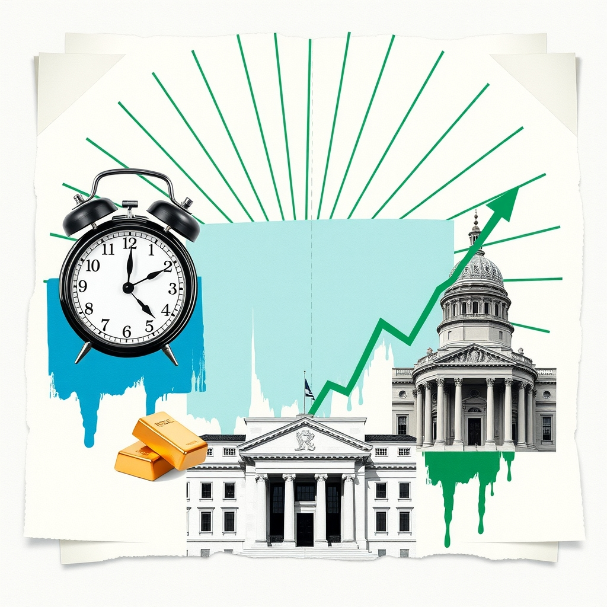
FOMC Meeting Minutes Await Gold Tradersកំណត់ហេតុប្រជុំ FOMC សម្រាប់អ្នកជួញដូរមាស
High-impact US economic data is scheduled in the coming hours. Stay prepared for potential market volatility.
ព្រឹត្តិការណ៍សេដ្ឋកិច្ចអាមេរិកដែលមានឥទ្ធិពលខ្លាំងនឹងមកដល់ក្នុងពេលប៉ុន្មានម៉ោងខាងមុខនេះ។ សូមប្រុងប្រយ័ត្នចំពោះការប្រែប្រួលទីផ្សារ។
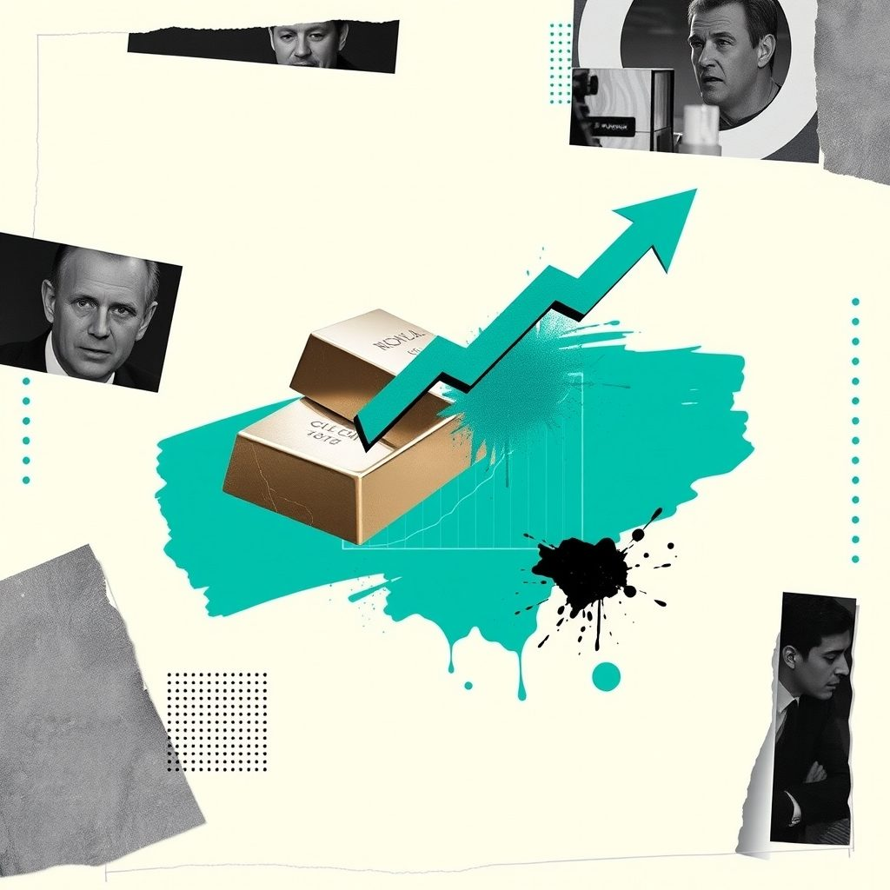
Jim Cramer Sees Major Gold Move After Brutal PlungeJim Cramer មើលឃើញការផ្លាស់ប្តូរំជើបរំជួលរបស់មាសក្រោយការធ្លាក់ចុះយ៉ាងខ្លាំង
Jim Cramer noted that the setup behind gold's next move is starting to change following a severe $1,500 decline. This commentary highlights shifting market dynamics that could heavily impact XAU/USD trading.
Jim Cramer បានកត់សម្គាល់ថាទម្រង់ទីផ្សាររបស់មាសចាប់ផ្តើមផ្លាស់ប្តូរ បន្ទាប់ពីការធ្លាក់ចុះយ៉ាងគំហុកចំនួន 1,500 ដុល្លារ។ ការវិភាគនេះបង្ហាញពីការប្រែប្រួលសន្ទុះទីផ្សារដែលអាចជះឥទ្ធិពលយ៉ាងខ្លាំងដល់ការជួញដូរ XAU/USD។
Advisors Flag Structural Market Risks as Stocks Hit Recordsអ្នកជំនាញព្រមានពីហានិភ័យទីផ្សារ ខណៈភាគហ៊ុនឡើងដល់កម្រិតខ្ពស់បំផុត
As major stock indexes touch record highs, analysts highlight hidden structural risks that could prompt a future market pullback. This shifting sentiment brings renewed focus to portfolio protection strategies using gold, bonds, and real assets.
ខណៈទីផ្សារភាគហ៊ុនឡើងដល់កម្រិតខ្ពស់ថ្មី អ្នកវិភាគបានលើកឡើងពីហានិភ័យដែលលាក់កំបាំងដែលអាចនាំឱ្យមានការធ្លាក់ចុះនាពេលអនាគត។ ការផ្លាស់ប្តូរអារម្មណ៍ទីផ្សារនេះបាននាំឱ្យមានការយកចិត្តទុកដាក់សាថ្មីលើការការពារផលប័ត្រដោយប្រើមាសនិងទ្រព្យសកម្មពិតប្រាកដ។
Black Sea Drone Attack Sinks Ship Amid Rising Regional Tensionsការវាយប្រហារដោយដ្រូនលើសមុទ្រខ្មៅបង្កើនភាពតានតឹងភូមិសាស្ត្រនយោបាយ
A ship has sunk and its crew is missing following a drone attack in the Black Sea as Russia intensifies strikes in the region. This geopolitical escalation boosts safe-haven demand for gold.
នាវាមួយបានលិច និងបាត់បង់នាវិកក្រោយការវាយប្រហារដោយដ្រូន ខណៈរុស្ស៊ីបង្កើនការវាយប្រហារក្នុងសមុទ្រខ្មៅ។ ភាពតានតឹងនេះជួយជំរុញតម្រូវការទីសុវត្ថិភាពសម្រាប់មាស។
S&P 500 Hits New Highs as Falling Oil Prices Ease InflationS&P 500 ឡើងដល់កម្រិតខ្ពស់ថ្មី ខណៈតម្លៃប្រេងធ្លាក់ចុះជួយសម្រាលអតិផរណា
The S&P 500 reached a new high as declining oil prices helped ease broader inflation concerns. For gold, shifting energy costs and equity market strength influence safe-haven and inflation hedging flows.
សន្ទស្សន៍ S&P 500 បានឡើងដល់កម្រិតខ្ពស់ថ្មី ខណៈតម្លៃប្រេងដែលធ្លាក់ចុះបានជួយកាត់បន្ថយការព្រួយបារម្ភអំពីអតិផរណា។ សម្រាប់មាស ការប្រែប្រួលថ្លៃថាមពលនិងទីផ្សារភាគហ៊ុនប៉ះពាល់ដល់លំហូរទុនសុវត្ថិភាពនិងការការពារអតិផរណា។
US Trade Deficit Widens to $105.6 Billionឱនភាពពាណិជ្ជកម្មអាមេរិកកើនឡើងដល់ ១០៥.៦ ពាន់លានដុល្លារ
The US trade deficit expanded significantly to $105.6 billion, exceeding consensus estimates and marking a 13.7% jump from July. This sharp shift in international trade flows holds implications for the US dollar and broader macroeconomic sentiment relevant to gold.
ឱនភាពពាណិជ្ជកម្មរបស់សហរដ្ឋអាមេរិកបានពង្រីកខ្លួនដល់ ១០៥.៦ ពាន់លានដុល្លារ ដោយបានកើនឡើង ១៣.៧% ពីខែកក្កដា។ ការផ្លាស់ប្តូរនេះមានសារៈសំខាន់សម្រាប់ទីផ្សារមាសតាមរយៈឥទ្ធិពលលើតម្លៃប្រាក់ដុល្លារអាមេរិក។
Energy Shock and Yield Surge Weigh on Mining Stocksការធ្លាក់ចុះតម្លៃភាគហ៊ុននិងប្រាក់ចំណូលសញ្ញាប័ណ្ណប៉ះពាល់ដល់ទីផ្សារមាស
The world's 50 biggest miners lost $264 billion in September as a Fed rate hike and surging bond yields dragged gold lower. Higher yields and rate pressures typically pressure non-yielding bullion.
ក្រុមហ៊ុនរ៉ែធំជាងគេចំនួន 50 នៅលើពិភពលោកបានខាតបង់ទឹកប្រាក់ចំនួន 264 ប៊ីលានដុល្លារអាមេរិកក្នុងខែកញ្ញា ដោយសារការដំឡើងអត្រាការប្រាក់របស់ Fed និងការកើនឡើងនៃប្រាក់ចំណូលសញ្ញាប័ណ្ណ។ កត្តាទាំងនេះបង្កើតសម្ពាធយ៉ាងខ្លាំងដល់ទីផ្សារមាស។
Inflation Concerns and Government Policy Shape Market Sentimentএবং គោលនយោបាយរដ្ឋាភិបាល កំណត់ទិសដៅទីផ្សារ
PM Capital released its Q2 2026 investor letter, highlighting that persistent inflation and central bank challenges are shaping market sentiment. This macro backdrop impacts gold as investors reassess policy paths and inflation hedging.
ក្រុមហ៊ុន PM Capital បានបញ្ចេញលិខិតវិនិយោគិនត្រីមាសទី២ ឆ្នាំ២០២៦ ដោយបញ្ជាក់ថាអតិផរណាជាប់រហូតកំពុងកំណត់ទិសដៅទីផ្សារ។ ស្ថានភាពម៉ាក្រូសេដ្ឋកិច្ចនេះមានឥទ្ធិពលលើ មាស ពេលអ្នកជួញដូរវាយតម្លៃឡើងវិញនូវគោលនយោបាយធនាគារកណ្តាល។
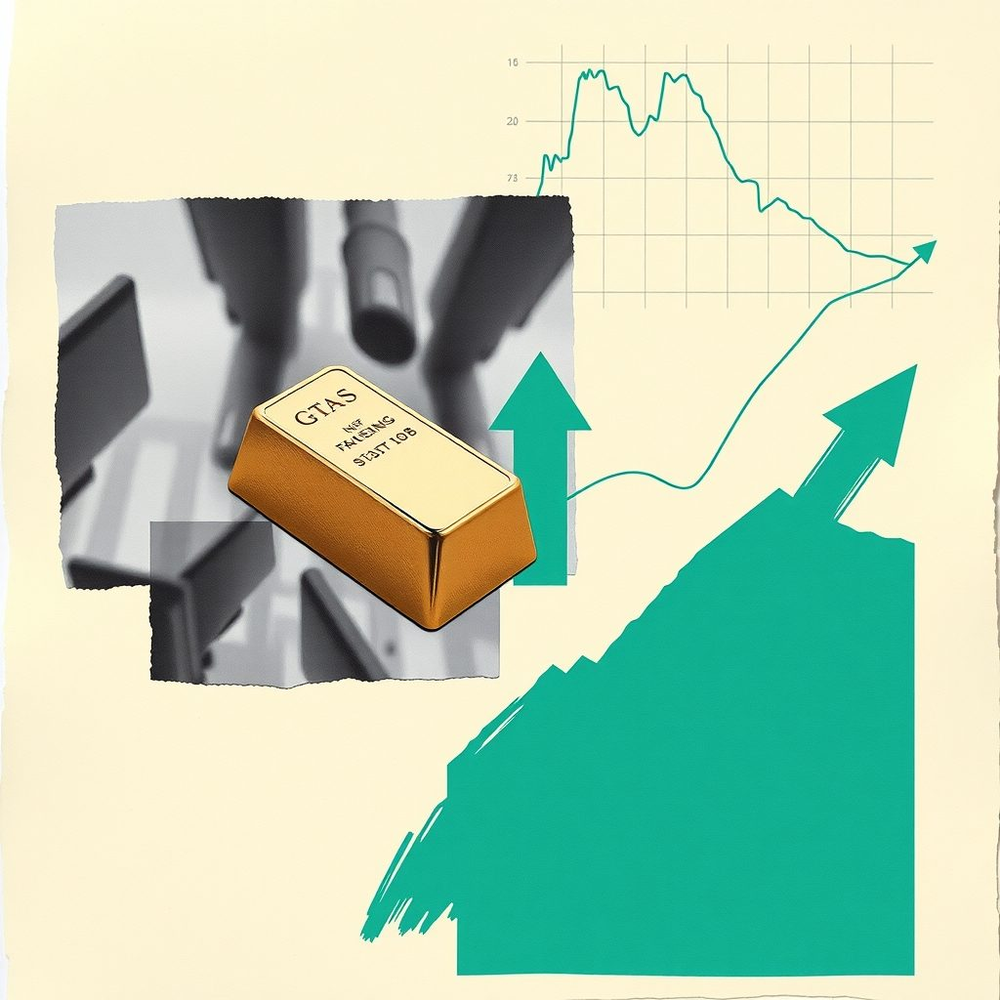
Gold Edges Higher as Global Conditions and Inflation Weighមាសកើនឡើងបន្តិច ខណៈអ្នកវិនិយោគតាមដានស្ថានភាពសកលនិងអតិផរណា
Gold futures opened higher at $4,169.20 per troy ounce, rising further in early trading as investors monitored domestic and global conditions. This movement highlights how macro sentiment and inflation concerns continue to influence XAU/USD valuations.
តម្លៃអនាគតមាសបានបើកឡើងក្នុងតម្លៃ 4,169.20 ដុល្លារអាមេរិកក្នុងមួយអោន ហើយបានបន្តឡើងថ្លៃបន្ថែមទៀត ខណៈអ្នកវិនិយោគតាមដានស្ថានភាពក្នុងស្រុកនិងសកល។ ការណ៍នេះបង្ហាញពីរបៀបដែលអារម្មណ៍ទីផ្សារនិងបញ្ហាអតិផរណាបន្តប៉ះពាល់ដល់តម្លៃ XAU/USD។
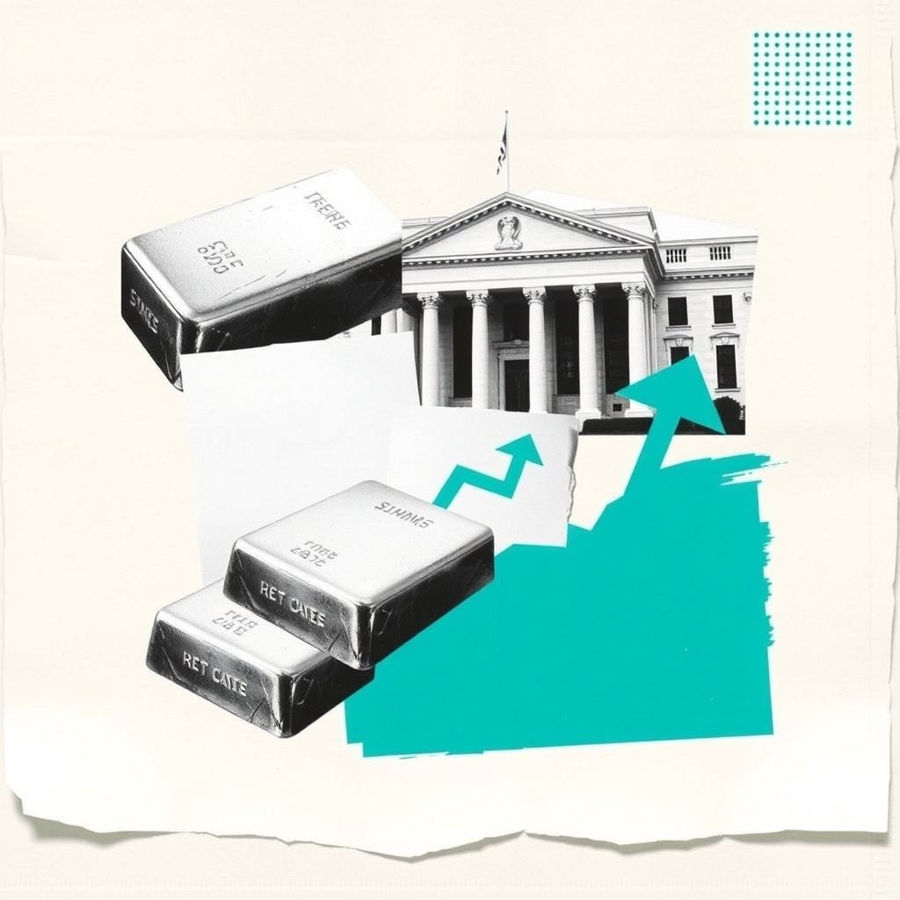
Gold Steadies as Strong Dollar and Yields Weighមាសរក្សាទម្រង់ស្ងប់ស្ងាត់ ខណៈដុល្លារនិងអត្រាការប្រាក់រតនាគារឡើងថ្លៃ
Gold held steady as traders weighed the impact of a stronger dollar and higher Treasury yields on Federal Reserve policy. These currency and yield pressures create a mixed market environment for precious metals.
តម្លៃមាសបានរក្សាលំនឹង ខណៈអ្នកជួញដូរថ្លឹងថ្លែងពីផលប៉ះពាល់នៃប្រាក់ដុល្លារអាមេរិកខ្លាំង និងអត្រាការប្រាក់រតនាគារខ្ពស់ទៅលើគោលនយោបាយរបស់ Fed។ កត្តាទាំងនេះបង្កើតបានជាបរិយាកាសទីផ្សារចម្រុះសម្រាប់លោហៈមានតម្លៃ។
Gold Holds Near USD 4,140 as Dollar and Yields Offset Fed Rate Outlookមាសរក្សាទីតាំងប្រហែល 4140 ដុល្លារអាមេរិក ខណៈប្រាក់ដុល្លារ និងអត្រាការប្រាក់ទប់ទល់នឹងការរំពឹងទុកលើអត្រាការប្រាក់របស់ Fed
Gold prices held steady near USD 4,140 following a recovery from recent weekly declines. A stronger US dollar and elevated Treasury yields offset support from lower Federal Reserve rate hike expectations.
តម្លៃមាសបានស្ថិតូនៅកម្រិតស្ថិរភាពជុំវិញ 4140 ដុល្លារអាមេរិក បន្ទាប់ពីការងើបឡើងវិញពីការធ្លាក់ចុះប្រចាំសប្តាហ៍។ ការងើបឡើងនៃតម្លៃប្រាក់ដុល្លារអាមេរិក និងផលប័ណ្ណបំណុលបានទូទាត់ទម្ងន់ជាមួយនឹងការរំពឹងទុកថារួមបន្ថយការដំឡើងអត្រាការប្រាក់របស់ធនាគារកណ្តាល។
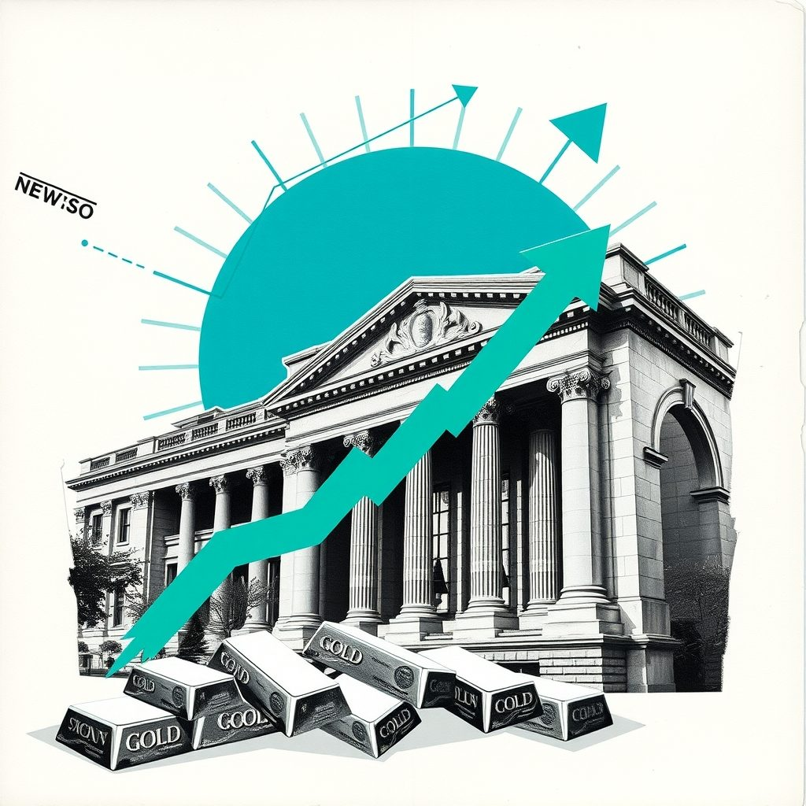
SEC Clears Leveraged Crypto and Precious Metals Exchange FundsSEC អනුម័តមូលនិធិ leveraged សម្រាប់គ្រីបតូ និងលោហៈមានតម្លៃ
The agency approved a Cboe rule for funds tracking daily moves of Bitcoin, Ethereum, gold, silver, oil, and natural gas. New regulated derivative products could shift institutional sentiment and trading volumes across physical and paper gold markets.
ទីភ្នាក់ងារនេះបានអនុម័តច្បាប់ Cboe សម្រាប់មូលនិធិដែលតាមដានការផ្លាស់ប្តូរតម្លៃប្រចាំថ្ងៃរបស់ Bitcoin, Ethereum, មាស និងប្រាក់។ ផលិតផលនិស្សន្ទវត្ថុថ្មីទាំងនេះអាចផ្លាស់ប្តូរអារម្មណ៍វិនិយោគិន និងបរិមាណជួញដូរលើទីផ្សារមាស។
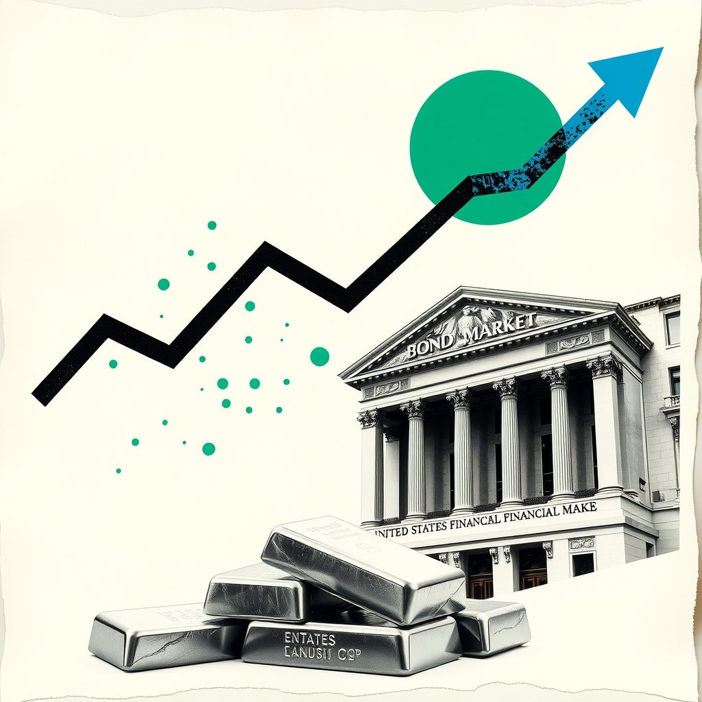
Tech Stocks Repriced as Yields and Rate Pressures Mountភាគហ៊ុនបច្ចេកវិទ្យាធ្លាក់ក្រោមសម្ពាធ
A weak jobs report, lofty Treasury yields near 5.3%, and volatile commodity prices have put rate-sensitive growth stocks under the microscope. This macro environment heavily influences rate expectations, driving shifts in capital between bonds and precious metals.
របាយការណ៍ការងារទន់ខ្សោយ 5.3% និងតម្លៃទំនិញមានការប្រែប្រួល បានដាក់សម្ពាធលើភាគហ៊ុនប្ចេកវិទ្យា។ បរិយាកាសម៉ាក្រូសេដ្ឋកិច្ចនេះជំរុញឱ្យមានការផ្លាស់ប្តូរទុនរវាងមូលបត្របំណុលនិងមាស។
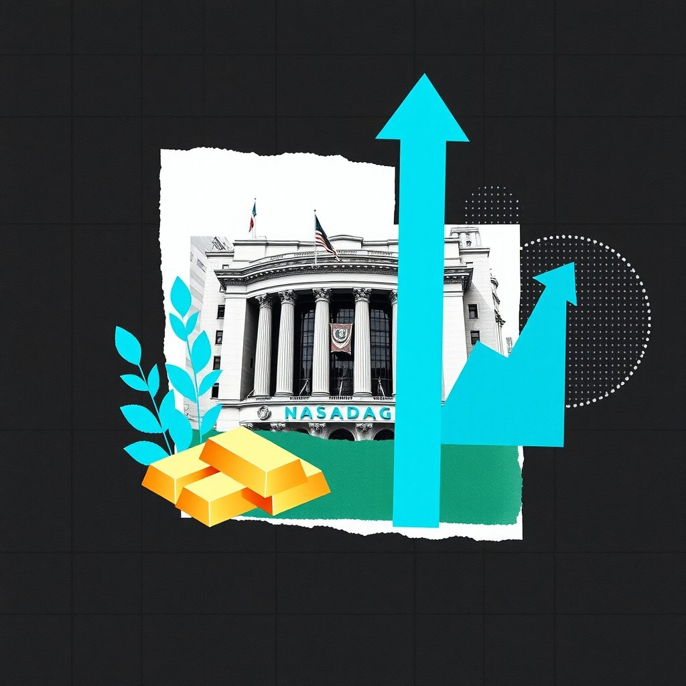
Nasdaq Hits Highs as Wall Street Splits and Yields CreepNasdaq ឡើងថ្លៃខ្ពស់ ខណៈទីផ្សារភាគហ៊ុនអាមេរិកបែងចែកនិន្នាការនិងអត្រាផលចំណូលកើនឡើង
Wall Street closed the week divided as the Nasdaq reached new highs while the Dow slipped and Treasury yields ticked upward. Precious metals including gold advanced alongside this broader market action.
ទីផ្សារភាគហ៊ុន Wall Street បិទបញ្ចប់សប្តាហ៍ដោយមានភាពខុសគ្នា ដោយ Nasdaq ឡើងដល់កម្រិតខ្ពស់ថ្មី ខណៈ Dow ធ្លាក់ចុះ។ មាសបានកើនឡើងទន្ទឹមនឹងការប្រែប្រួលនៃទីផ្សារទូទៅនេះ។
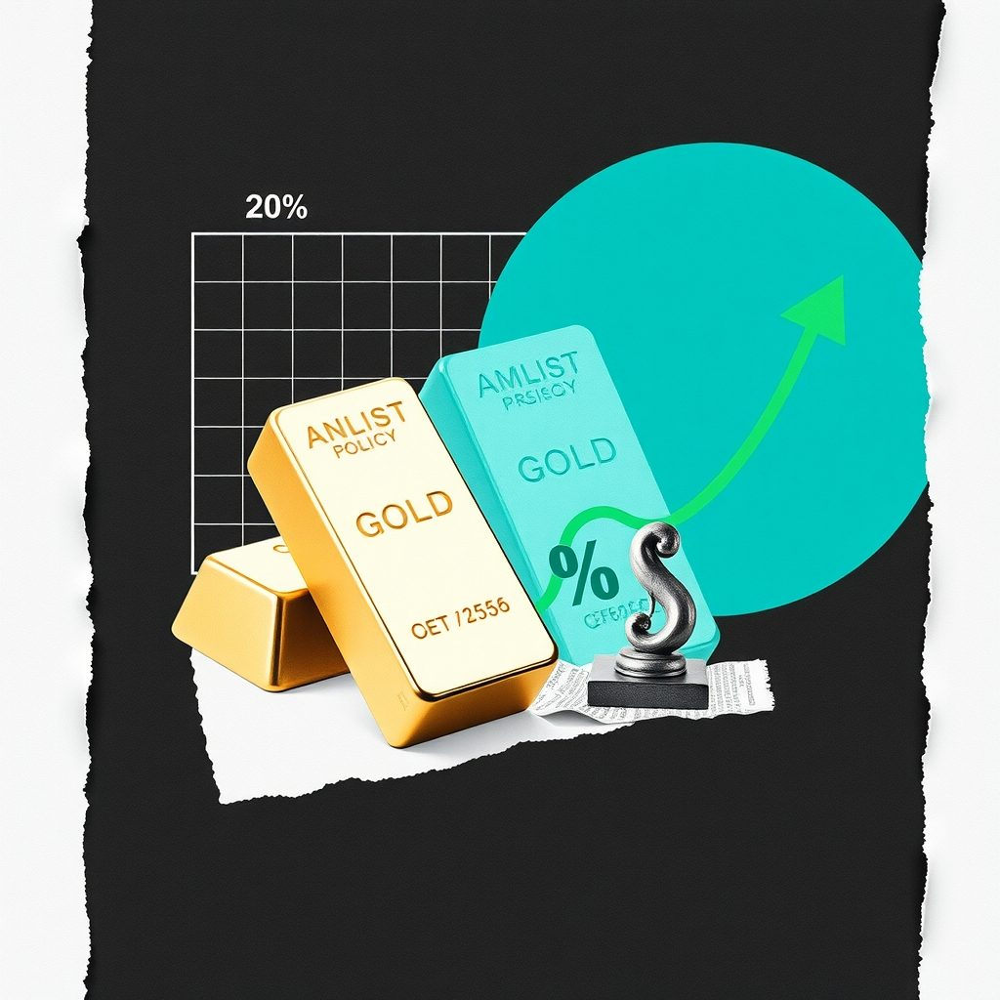
Spot Gold Rises as October Fed Rate Hike Odds Waneតម្លៃមាស Spot កើនឡើង ខណៈឱកាសដំឡើងការប្រាក់របស់ Fed ក្នុងខែតុលាធ្លាក់ចុះ
Spot gold climbed 0.6% to $4,165.49 after a soft September jobs report lowered tightening expectations. Reduced chances of a Fed rate hike lessen yield competition against non-yielding bullion.
តម្លៃមាស Spot បានកើនឡើង 0.6% ដល់ 4,165.49 ដុល្លារ បន្ទាប់ពីរបាយការណ៍ការងារខែកញ្ញាខ្សោយបានកាត់បន្ថយការរំពឹងទុកលើការរឹតបន្តឹង។ ការធ្លាក់ចុះនៃឱកាសដំឡើងអត្រាការប្រាក់របស់ Fed ជួយកាត់បន្ថយសម្ពាធលើលោហៈធាតុដែលមិនផ្តល់ផលប័ត្រ។
Wall Street Strategists Turn to Cross-Asset Hedges Amid Yield Surgeយុទ្ធសាស្ត្រទីផ្សារ Wall Street ងាករកដំណោះស្រាយការពារហានិភ័យចំពេលអត្រាការប្រាក់ប័ណ្ណបំណុលហក់ឡើង
Wall Street strategists are focusing on cross-asset trades as equities, gold and oil struggle while Treasury yields surge. This shift highlights how soaring yields and struggling asset classes create new pressures for precious metals.
អ្នកយុទ្ធសាស្ត្រ Wall Street កំពុងផ្តោតលើការជួញដូរឆ្លងទ្រព្យសកម្ម ខណៈភាគហ៊ុន មាស និងប្រេងជួបការលំបាក ενពេលដែលទិន្នផលប័ណ្ណបំណុលហក់ឡើង។ ការផ្លាស់ប្តូរនេះបង្ហាញពីសម្ពាធថ្មីសម្រាប់លោហៈមានតម្លៃ។
Gold Edges Higher as Markets Weigh Labor Data and Yieldsមាសកើនឡើងបន្តិច
Gold rose following its largest weekly drop since June as market participants evaluated US labor trends and bond yields. This ongoing assessment of economic data directly influences interest rate expectations and metal valuations.
តម្លៃមាសបានងើបឡើងវិញបន្ទាប់ពីការធ្លាក់ចុះប្រចាំសប្តាហ៍ដ៏ធំបំផុតចាប់តាំងពីខែមិថុនាមក ខណៈអ្នកជួញដូរវាយតម្លៃលើស្ថានភាពទីផ្សារការងារ។ ការវិភាគលើទិន្នន័យសេដ្ឋកិច្ចទាំងនេះមានឥទ្ធិពលផ្ទាល់ទៅលើការរំពឹងទុកអត្រាការប្រាក់ និងតម្លៃលោហៈមានតម្លៃ។
Gold Edges Higher as Labor Slowdown Offsets Elevated Yieldsមាសឡើងថ្លៃបន្តិច ខណៈទីផ្សារការងារថយចុះទប់ទល់នឹងទិន្នផលសញ្ញាបណ្ណខ្ពស់
Gold edged higher on Monday following its sharpest weekly decline since June. Slower U.S. labor momentum eased Federal Reserve rate hike bets, but elevated Treasury yields and oil prices limited gains.
តម្លៃមាសបានកើនឡើងបន្តិចកាលពីថ្ងៃចន្ទ បន្ទាប់ពីការធ្លាក់ចុះប្រចាំសប្តាហ៍ខ្លាំងបំផុតចាប់តាំងពីខែមិថុនា។ ការថយចុះកម្តៅនៃទីផ្សារការងារសហរដ្ឋអាមេរិកបានកាត់បន្ថយការរំពឹងទុកលើការដំឡើងអត្រាការប្រាក់ Fed ប៉ុន្តែទិន្នផលសញ្ញាបណ្ណខ្ពស់បានដាក់សម្ពាធលើការងើបឡើងនេះ។
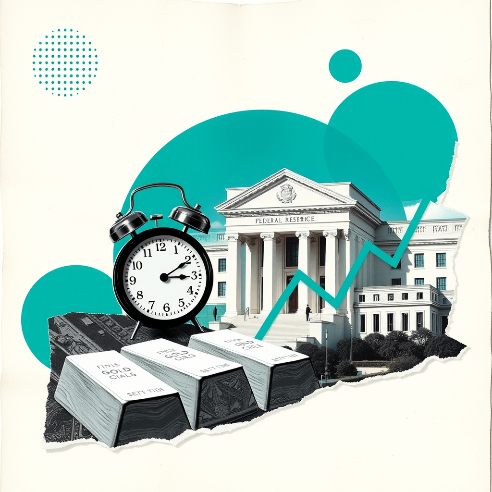
Key US Data and Fed Minutes Ahead for Gold Tradersទិន្នន័យសេដ្ឋកិច្ចអាមេរិក និងកំណត់ហេតុ FOMC សម្រាប់អ្នកជួញដូរមាស
Upcoming US economic releases may drive fresh swings in gold (XAU/USD). Traders should monitor the ISM Services PMI and FOMC Meeting Minutes closely.
ព្រឹត្តិការណ៍សេដ្ឋកិច្ចអាមេរិកសំខាន់ៗអាចជំរុញឱ្យតម្លៃមាស (XAU/USD) ប្រែប្រួលខ្លាំង។ អ្នកជួញដូរគួរតាមដានរបាយការណ៍ ISM Services PMI និងកំណត់ហេតុ FOMC ឱ្យបានដិតដល់។

Gold Futures Erase Jobs Gains, Sinking Lower Intradayកិច្ចសន្យាអនាគតមាសបាត់បង់ការកើនឡើងពីទិន្នន័យការងារ ដោយធ្លាក់ចុះវិញក្នុងថ្ងៃ
Gold futures surrendered their early jobs-data rally, turning lower midway through the session. This intraday reversal shows traders fading soft-data gains, directly impacting near-term sentiment for XAU/USD.
កិច្ចសន្យាអនាគតមាសបានបាត់បង់ការកើនឡើងដំបូងដែលទទួលបានពីទិន្នន័យការងារ ដោយបានធ្លាក់ចុះវិញនៅពាក់កណ្តាលថ្ងៃ។ ការបញ្ច្រាសទិសដៅក្នុងថ្ងៃនេះបង្ហាញពីការលក់ទប់ទល់នឹងការឡើងថ្លៃ ដែលជះឥទ្ធិពលផ្ទាល់ដល់មនោសញ្ចេតនាលើ XAU/USD។

Gold Jumps as Soft Jobs Report Cools Fed Rate Betsមាសស្ទុះឡើងក្រោយទិន្នន័យការងារខ្សោយកាត់បន្ថយការរំពឹងទុកអត្រាការប្រាក់ Fed
The US added just 29,000 jobs in September, pushing gold higher as traders lowered expectations for a Fed rate hike. This weak labor data directly impacts rate expectations and currency valuations, shifting market momentum.
សហរដ្ឋអាមេរិកបានបន្ថែមការងារត្រឹមតែ ២៩,០០០ ប៉ុណ្ណោះក្នុងខែកញ្ញា ដោយបានជំរុញឱ្យតម្លៃមាសកើនឡើង ខណៈអ្នកជួញដោកាត់បន្ថយការព្យាករណ៍លើការដំឡើងអត្រាការប្រាក់របស់ Fed។ ទិន្នន័យទីផ្សារការងារខ្សោយនេះប៉ះពាល់ផ្ទាល់ដល់ការរំពឹងទុកអត្រាការប្រាក់ និងតម្លៃប្រាក់ដុល្លារ។

US Labor Market Falters as September Payrolls Miss ForecastUS Labor Market Falters as September Payrolls Miss Forecast
Nonfarm payrolls grew by just 29,000 in September and the unemployment rate rose to 4.2%, according to the Bureau of Labor Statistics. The weaker labor data significantly reduced expectations of further Fed rate hikes.
ទិន្នន័យការងារក្រៅវិស័យកសិកម្មបានកើនឡើងត្រឹមតែ ២៩,០០០ កន្លែងក្នុងខែកញ្ញា ហើយអត្រាអ្នកគ្មានការងារធ្វើបានកើនឡើងដល់ ៤,២%។ ទិន្នន័យខ្សោយនេះបានកាត់បន្ថយការរំពឹងទុកលើការដំឡើងអត្រាការប្រាក់របស់ Fed យ៉ាងខ្លាំង។

Gold Steadifies as Markets Await U.S. Jobs Dataមាសមានភាពនឹងនរ ខណៈទីផ្សាររង់ចាំទិន្នន័យការងារអាមេរិក
Gold prices remained little changed while investors awaited crucial U.S. labor market reports. A stronger dollar and high yields weighed on non-yielding bullion.
តម្លៃមាសមានការផ្លាស់ប្តូរតិចតួចប៉ុណ្ណោះ ខណៈអ្នកវិនិយោគរង់ចាំរបាយការណ៍ទីផ្សារការងារអាមេរិកដ៏សំខាន់។ ការងើបឡើងនៃដុល្លារអាមេរិក និងអត្រាការប្រាក់រតនាគារខ្ពស់បានដាក់សម្ពាធដល់លោហៈមានតម្លៃនេះ។

Peak Rate Prospects Shift Focus Across Precious Metalsអត្រាការប្រាក់អាចឈានដល់កម្រិតកំពូល ខណៈតម្រូវការលោហៈប្រែប្រួល
Market expectations suggest interest rates may be nearing a peak while silver gains attention. Sustained economic resilience could reshape demand dynamics between gold and industrial metals.
ការពិភាក្សាលើទីផ្សារបង្ហាញថាអត្រាការប្រាក់អាចនឹងឈានដល់កម្រិតកំពូល ខណៈ silver កំពុងទាក់ទាញចំណាប់អារម្មណ៍។ ការណ៍នេះមានសារៈសំខាន់ចំពោះមាស ព្រោះកំណើនសេដ្ឋកិច្ចបន្តអាចបង្វែរលំហូរទុនរវាងទ្រព្យសម្បត្តិសុវត្ថិភាព និងលោហៈឧស្សាហកម្ម។

Bond Yields Retreat as Buyers Return to Treasury Marketអត្រាការប្រាក់សញ្ញាប័ណ្ណធ្លាក់ចុះ ខណៈអ្នកទិញត្រឡប់ចូលទីផ្សារ Treasury វិញ
US bond yields suddenly retreated from recent highs as buyers stepped back into the Treasury market. This dynamic influences real yields and rate expectations, directly impacting the valuation of XAU/USD.
អត្រាការប្រាក់សញ្ញាប័ណ្ណអាមេរិកបានធ្លាក់ចុះយ៉ាងលឿនពីកម្រិតខ្ពស់ថ្មីៗនេះ ខណៈដែលអ្នកទិញបានចូលមកទីផ្សារ Treasury វិញ។ ចលនានេះមានឥទ្ធិពលលើអត្រាការប្រាក់ពិតប្រាកដ និងការរំពឹងទុកលើអត្រាការប្រាក់ ដែលប៉ះពាល់ផ្ទាល់ដល់តម្លៃ XAU/USD។

US Employment Report Approaches: Key Volatility Ahead for Goldរបាយការណ៍ការងារអាមេរិកជិតមកដល់៖ ទីផ្សារមាសត្រៀមទទួលការប្រែប្រួលខ្លាំង
Important US labor market data releases are scheduled for Friday at 19:30 Phnom Penh time. Prepare for potential market movement.
ទិន្នន័យទីផ្សារការងារអាមេរិកដ៏សំខាន់នឹងត្រូវប្រកាសនៅថ្ងៃសុក្រ វេលាម៉ោង 19:30 នាទី តាមម៉ោងនៅភ្នំពេញ។ សូមត្រៀមខ្លួនសម្រាប់ចលនាទីផ្សារដែលអាចកើតមាន។

Bond Yields Surge to 24-Year High as Stocks Edge Lowerអត្រាផលប័ត្របំណុលរដ្ឋឡើងដល់កម្រិតខ្ពស់បំផុតក្នុងរយៈពេល ២៤ ឆ្នាំ ខណៈទីផ្សារភាគហ៊ុនធ្លាក់ចុះបន្តិច
Bond yields hit a two-decade peak, pressuring the broader market as buyers step back. This surge in Treasury yields creates direct headwinds for non-yielding gold.
អត្រាផលប័ត្របំណុលបានឡើងដល់កម្រិតកំពូលក្នុងរយៈពេលពីរទសវត្សរ៍ ដែលដាក់សម្ពាធលើទីផ្សារទូទៅ។ ការកើនឡើងនៃអត្រាផលប័ត្របំណុលនេះបង្កើតជាឧបសគ្គផ្ទាល់សម្រាប់ទីផ្សារមាស។

Crucial US Data Ahead for Gold Tradersទិន្នន័យសេដ្ឋកិច្ចអាមេរិកសំខាន់ៗដែលអ្នកជួញដូរមាសត្រូវតាមដាន
របាយការណ៍ការងារនិងចង្វាក់ផលិតកម្មអាមេរិកសំខាន់ៗនឹងត្រូវចេញផ្សាយក្នុងពេលឆាប់ៗនេះ។ អ្នកជួញដូរមាសគួរត្រៀមលក្ខណៈចំពោះការប្រែប្រួលតម្លៃក្នុងទីផ្សារ។
របាយការណ៍ការងារនិងចង្វាក់ផលិតកម្មអាមេរិកសំខាន់ៗនឹងត្រូវចេញផ្សាយក្នុងពេលឆាប់ៗនេះ។ អ្នកជួញដូរមាសគួរត្រៀមលក្ខណៈចំពោះការប្រែប្រួលតម្លៃក្នុងទីផ្សារ។

Kashkari Cites Sticky Inflation Despite Softer PCE PrintKashkari បញ្ជាក់ថាអតិផរណានៅតែខ្ពស់ទោះបីជាទិន្នន័យ PCE ធ្លាក់ចុះក៏ដោយ
Fed official Neel Kashkari noted that inflation remains too high despite softer PCE data. This persistent price pressure impacts rate expectations and shapes gold market dynamics.
មន្ត្រី Fed លោក Neel Kashkari បានកត់សម្គាល់ថាអតិផរណានៅតែខ្ពស់ ទោះបីជាមានទិន្នន័យ PCE ទាបជាងការរំពឹងទុកក៏ដោយ។ សម្ពាធតម្លៃដែលនៅបន្តនេះប៉ះពាល់ដល់ការរំពឹងទុកអត្រាការប្រាក់ និងជ شكلដល់សក្ដានុពលទីផ្សារមាស។

US Economic Data Highlights Inflation and Labor Market Metricsទិន្នន័យសេដ្ឋកិច្ចអាមេរិកបង្ហាញពីអត្រាអតិផរណា និងទីផ្សារការងារ
Recent economic releases detail consumer and producer price changes alongside labor market statistics for August 2026. These figures influence Federal Reserve policy expectations and subsequently impact gold trading dynamics.
ទិន្នន័យសេដ្ឋកិច្ចថ្មីៗបង្ហាញពីការផ្លាស់ប្តូរតម្លៃទំនិញ និងស្ថិតិទីផ្សារការងារសម្រាប់ខែសីហា ឆ្នាំ2026។ តួលេខទាំងនេះមានឥទ្ធិពលលើការរំពឹងទុកលើគោលនយោបាយរបស់ Fed និងជះឥទ្ធិពលដល់ការជួញដូរមាស។

Cooler PCE Inflation Data Drives Market Sentiment and Rate Betsទិន្នន័យអតិផរណា PCE ធ្លាក់ចុះជំរុញអារម្មណ៍ទីផ្សារនិងការរំពឹងទុកអត្រាការប្រាក់
The Personal Consumption Expenditures report showed prices fell more than expected in August. This lower inflation gauge directly impacts Federal Reserve interest rate expectations and moves XAU/USD.
របាយការណ៍ PCE បង្ហាញថាទំនិញបានធ្លាក់ចុះជាងការរំពឹងទុកក្នុងខែសីហា។ ទិន្នន័យនេះប៉ះពាល់ដោយផ្ទាល់ដល់ការរំពឹងទុកអត្រាការប្រាក់របស់ Fed និងរំកិលតម្លៃ XAU/USD។

Gold Holds Steady as Softer Inflation Tempers Fed Betsមាសស្ទើរតែរក្សាបានស្ថិរភាព ខណៈអតិផរណាធ្លាក់ចុះកាត់បន្ថយការរំពឹងទុកលើអត្រាការប្រាក់ Fed
Gold opened the month steady as softer inflation data lowered rate-hike expectations, while high bond yields limited gains. This dynamic directly influences market sentiment and precious metal valuations.
តម្លៃមាសបានបើកដំណើរការក្នុងទម្រង់ស្ទើរតែស្មើគ្នា ដោយសារទិន្នន័យអតិផរណាទន់ជាងមុនបានកាត់បន្ថយការព្យាករណ៍អំពីការដំឡើងអត្រាការប្រាក់។ កត្តានេះជះឥទ្ធិពលយ៉ាងខ្លាំងដល់ទស្សនៈទីផ្សារ និងតម្លៃលោហៈមានតម្លៃ។

Gold Holds Steady After September Slide Amid Fed Rate BetsGold Holds Steady After September Slide Amid Fed Rate Bets
Gold prices remained steady following a 6 percent September slide as softer U.S. inflation data tempered Federal Reserve rate hike expectations. This dynamic highlights the ongoing tension between moderating inflation figures and elevated Treasury yields for bullion traders.
Gold prices remained steady following a 6 percent September slide as softer U.S. inflation data tempered Federal Reserve rate hike expectations. This dynamic highlights the ongoing tension between moderating inflation figures and elevated Treasury yields for bullion traders.

China Warns Europe Over Potential Business RestrictionsChina Warns Europe Over Potential Business Restrictions
Beijing signals firm retaliation if the European Union places curbs on Chinese businesses or products. Market participants monitor potential trade tensions closely.
Beijing signals firm retaliation if the European Union places curbs on Chinese businesses or products. Market participants monitor potential trade tensions closely.

Federal Reserve Finalizes Stress Test ChangesFederal Reserve Finalizes Stress Test Changes
The Federal Reserve finalized updates to its stress tests aimed at improving transparency and reducing capital requirement volatility.
The Federal Reserve finalized updates to its stress tests aimed at improving transparency and reducing capital requirement volatility.

Fed Official Flags Persistently High Inflation Amid Strong LaborFed Official Flags Persistently High Inflation Amid Strong Labor
Federal Reserve official Neel Kashkari noted that inflation remains elevated despite softer PCE data. Meanwhile, the broader labor market continues to show solid performance.
Federal Reserve official Neel Kashkari noted that inflation remains elevated despite softer PCE data. Meanwhile, the broader labor market continues to show solid performance.